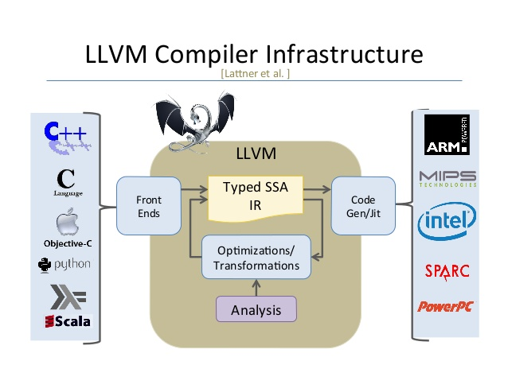
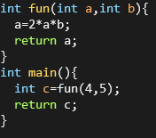
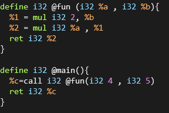

LLVM Nedir?
Low level virtual machine(LLVM), 2000 yılında Illinois at Urbana–Champaign Üniversitesi tarafından geliştirilmeye başlanmış apache lisansli bir açık kaynak compiler(infrastructure) altyapısıdır.Günümüzde ise birçok mini projeye bölünmüş bir frameworke dönüşmüştür. Temel çıkış amacı ayrı bir compiler yazmaya gerek kalmaması için compiler'a derleme aşamasında müdahale edebilme çabasıdır. Bunun için compiler'a ek bir aşama daha eklenmiştir.
Şekilde görüldüğü gibi llvm bir IR(intermediate representation) kodu üretir.Tıpkı Java veya .NET'te olduğu gibi. Peki bunun ne gibi avantajları var, gelin inceleyelim.
LLVM IR
Program llvm ir aşamasından sonra dinamik olarak compile edilmez. Sadece statik compile ile kod uygun işlemci mimarisine çevrilir. İşte tam burada ister yazdığımız bir kodu compile edip compiler'larda normalde alamayacagimiz bir çıktı alabilir, ister yazdığımız kodu optimize hale getirir, analiz ederiz, istersek de programımızı çeşitli platformlara küçük dokunuşlarla cross compile edebiliriz.
Basit bir C kodu yukarıdaki gibi compile olur. main.ll bölümünde programa isteğimiz müdahaleleri yapar, ister JIT ile çalıştırır, ister native bir assembly çıktısı alırız.
Şimdi gelin birlikte llvm ir backend kısmında bir program geliştirelim.Hello world!!!
Başta IR syntax'ini tanıyalım. IR dilinde değişkenler tanımlanırken kaç bit oldukları gösterilir. Örneğin standart 32 bitlik bir integer i32 olarak belirtilir ve başlarına '%' isareti konur. Fonksiyonlar ise define keywordu ile belirtilir, başlarına da '@' işareti konur. Şimdi örnek bir C kodu inceleyelim.
Herhangi bir kütüphane include edilmemiş, sadece integer döndüren bir fonksiyon var. Bu durumda çıktı şuna yakın bir şey olacaktır.
Şimdi main kodunu compile edip karşılaştıralım.
clang -O1 -emit-llvm main.c -c -o main.bc
ile compile ettiğimizde main.bc adında llvm ir bitcode'u oluşur. Bunu istersek lli ile just in time(JIT) olarak calistirabiliriz, istersekllc main.bs -o main.s yaparak x86 koduna generate edebiliriz. Ama biz şuan llvm-dis main.bc -o main.ll yaparak ir dilindeki kodları karşılaştıracağız. Kodumuzun çıktısı şu şekilde:
Fun fonksiyonunda %0 ve %1 argüman olarak alınmış. Ardından %3 oluşturulmuş ve shl instruction'ı ile bitwise shiftleft yapılmış.(Bu işlemciler için 2 ile çarpmaktan daha verimli bir yol.) Ardından %4 değişkeni oluşturulmuş ve %1 ile %3 çarpılarak %4e atanmış ve return edilmiş. Main fonksiyonunda ise görüldüğü üzere fun, 4 ve 5 argümanlarıyla çağırılmış, dönen değer main scope'undaki %1'e atanmış ve return olmuş. Şunu da eklemekte fayda var.Biz clang ile compile ederken -O1 parametresini kullandık.Bu otomatik optimize etme seviyesini belirtir.Mesela bu kodda -O3 yapsaydık compiler fun(4,5) için sonucun her zaman 40 olacağını anlardı ve mainde 40 değeri bir değişkene dahi atanmadan return olurdu.